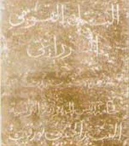
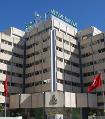

LA CRÉATION DE LA BANQUE NATIONALE AGRICOLE
Un geste politique fort et un acte économique majeur
Il y a plus de 55 ans, la Banque Nationale Agricole voyait le jour dans l’euphorie de l’indépendance nationale et de la proclamation de la République qui a suivi aussitôt après. Signe prémonitoire et sans doute chargé de signification, la Banque a l’âge de la Constitution, ratifiée la même année en 1959. Comme si l’on voulait que la banque, à sa naissance, soit pour l’économie ce que la Constitution fut pour la République.
Trois années plus tôt, en 1956, le pays accédait à l’indépendance politique. Il hérita d’une économie exsangue, privée d’infrastructures, de tissu productif d’acteurs économiques et plus encore, de sources et de mécanismes de financement. L’argent, nerf de l’économie, faisait défaut ; au mieux il était sous le contrôle d’institutions financières réduites à leur plus simple expression et liées à l’ancienne puissance coloniale. Il n’y avait rien ou presque qui puisse canaliser l’épargne nationale au profit du financement de l’économie.
Pourtant, seule une économie en développement, en croissance rapide pouvait donner corps et âme au projet politique d’émancipation et de redressement national, cher aux dirigeants nationaux.
La BNA est née de cette ambition : elle était le bras et le levier de financement de l’Etat pour construire une économie en devenir. Avec la création de la BNA, le jeune Etat tunisien s’est donné l’instrument de ses attributs de souveraineté et d’indépendance nationale.
Plus qu’une source décisive de financement, la BNA était le symbole d’une farouche volonté d’indépendance et donc un choix des plus pertinents qui tranchait avec l’idéologie ambiante de l’époque et qui faisait la part belle à l’industrie et au commerce aux dépends de l’agriculture. L’industrie était synonyme de progrès et de modernité alors que l’agriculture suscitait peu d’enthousiasme et s’attirait peu de moyens. On sait ce qu’il advint de cette théorie erronée qui occulte et élude le rôle et le poids du secteur agricole ainsi que sa contribution à l’essor de l’économie et plus encore ses effets sur la cohésion et la solidité du tissu économique et social.
La création de la BNA fut un geste politique fort et un acte économique majeur. Le financement de l’agriculture - dont elle développa très tôt les outils et les mécanismes appropriés - ne couvrait pas la totalité des activités de la banque tant s’en faut. La BNA avait déjà vocation universelle : l’industrie, les services et le commerce faisaient partie de son vaste champ de compétence.
La BNA s’est positionnée dès le départ comme l’élément central du dispositif de développement économique équilibré et harmonieux du pays.
La BNA est, certes, l’expression de la volonté de modernisation du pays, elle est aussi de par sa vocation plurielle et son inclination agricole prononcée, le signe annonciateur de ce qui s’est imposé depuis comme l’exception tunisienne. Derrière ces trois mots inscrits en lettres d’or dans le registre de l’histoire économique contemporaine de la Tunisie, la BNA était l’affirmation d’une forte volonté de développement et d’indépendance. Elle était aussi la démonstration d’une vision aussi profonde que lointaine. Elle évoquait à elle seule la mise en perspective de l’avenir du pays.
La BNA était l’incarnation d’un grand dessein national en ces temps héroïques. Il fallait un immense talent et tout le patriotisme qu’on connaît aux pionniers de la banque pour forcer le destin, bâtir une véritable institution au service du développement et la porter très tôt aux avant-postes de notre économie en construction.
La banque exerça un effet de levier extraordinaire au départ et à l’arrivée de la quasi-totalité des projets qui ont jalonné le parcours de l’économie tunisienne. Il est peu de projets industriels qui n’aient bénéficié du concours de la BNA au titre de conseil et de financement alors que celle-ci assure un rôle capital dans la promotion du secteur agricole.
La banque, et c’est son trait de caractère, promet autant qu’elle promeut. Elle a vocation à développer notre épargne nationale, à financer le développement de notre jeune Nation.
LA CONVERSION EN BANQUE UNIVERSELLE
La BNT, beaucoup plus qu’une nouvelle réorganisation.
La première décennie de la BNA fut aussi dense en activité que riche en réalisations. Ancrage profond dans le secteur bancaire tunisien avec une spécialisation dans l’agriculture, mais aussi développement des activités liées au secteur, notamment, l’agro-alimentaire.
De meme et en moins de temps qu’il n’était prévu, l’agriculture tunisienne portait la trace indélébile et le label de la BNA. Le succès fut quasi immédiat. L’industrie et le commerce, ne furent pas en reste. Si bien que par souci de cohérence, et au regard de l’ouverture de la banque sur l’ensemble des secteurs de l’économie nationale - tout en privilégiant le financement du secteur agricole.
Mais aussi, et en corollaire pour la banque, une ouverture à l’international avec la multiplication des correspondants à l’étranger et une meilleure connexion sur les sources de financement.
C’est ainsi que dès le 1er octobre 1969, la banque annonce sa conversion en banque universelle assurant son ouverture vers l’ensemble des secteurs de l’activité économique et financière, par la nouvelle dénomination : Banque Nationale de Tunisie. Il y a là beaucoup plus que l’annonce d’une nouvelle réorganisation.
Cette extension du champ d’action de la banque, motivée par les liens de solidarité existant entre les divers secteurs économiques devra permettre à la banque de réunir les conditions propres à assurer une croissance saine et équilibrée.

FUSION PAR ABSORPTION DE LA BNDA
La Banque prend sa nouvelle enseigne "Banque Nationale Agricole "
Rattrapée par l’histoire et interpellée de nouveau par le succès, vingt ans après qu’elle ait changé de nom, la Banque retrouve sa dénomination originelle. En octobre 1989 et en vue d’unifier les principales structures du crédit agricole, s’opère la fusion-absorption de la Banque Nationale de Développement Agricole “BNDA” par la Banque Nationale de Tunisie “BNT”. La suite est dans l’ordre des choses et dans la logique de cette fusion. La Banque a pris sa nouvelle enseigne : Banque Nationale Agricole.
La BNA se veut aussi la vitrine des avancées sociales de la Tunisie ; elle entend se placer à l’avant-garde des institutions capables de concilier efficacité financière et impératif social tout en assumant pleinement le rôle qui lui est dévolu en matière de développement de l’épargne nationale et de financement de l’économie.
La banque avance les yeux fixés sur la ligne d’horizon aux traits bien dessinés, sa visibilité est parfaite, son modèle de développement a déjà fait ses preuves ; il est validé par les faits, par les partenaires, par les clients et par les actionnaires. La BNA a su créer, avec l’efficacité nécessaire, de nouvelles richesses, des emplois et de la valeur.
La banque met son savoir-faire, son expertise et son professionnalisme au service de sa clientèle pour mieux servir la cause de l’économie nationale. Chaque point de croissance supplémentaire, chaque nouvel espace conquis par les différents secteurs économiques et financiers est un point de plus pour l’entrepreneuriat et le développement régional.
Profondément enracinée dans le terroir national, la BNA est délibérément ouverte sur le monde, les innovations technologiques de quelque nature qu’elles soient : financière, économique, agricole, etc.
Au-delà de sa rigueur et de ses exigences professionnelles, la BNA, c’est aussi une culture de groupe, un code de conduite qui fait de la banque une entreprise citoyenne, qui a su porter la morale publique à son plus haut niveau. C’est cet ensemble de valeurs qui nourrit son dynamisme et entretient sa vitalité.
Plus d’un demi-siècle d’activités sur tous les fronts et pas une ride. Sans doute parce que la BNA est une idée toujours neuve. Elle a su s’inventer en permanence un avenir, portée qu’elle est par son élan de jeunesse.
La BNA, ses cadres dirigeants et ses employés puisent dans les principes moraux et l’éthique de la Tunisie nouvelle les ressorts de leur inspiration et de leur action. Nourrie de ces valeurs, la banque peut, à raison, se préparer à son centenaire. Elle fut et reste une institution aux racines ancrées dans le tréfonds de la mémoire tunisienne.
Dès sa naissance, elle exprimait à la fois une grande ambition et une promesse d'avenir, une idée novatrice servie par des femmes et des hommes mobilisés à cette finalité. Elle a été portée par la force des bras d’un personnel exemplaire.
Sur le fronton de la banque, dans ses registres, on voit transparaître, au delà de l'emblème du métier exigeant, une mission au service de la nation.